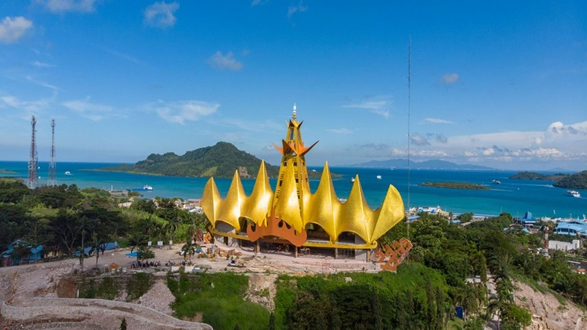
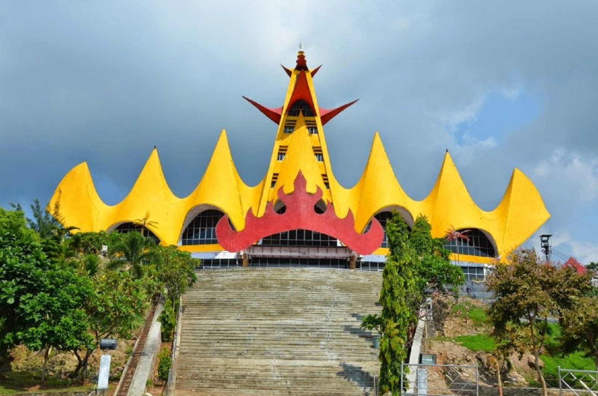
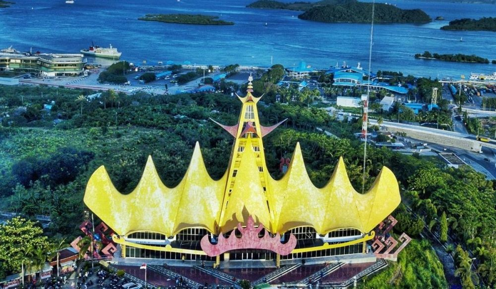
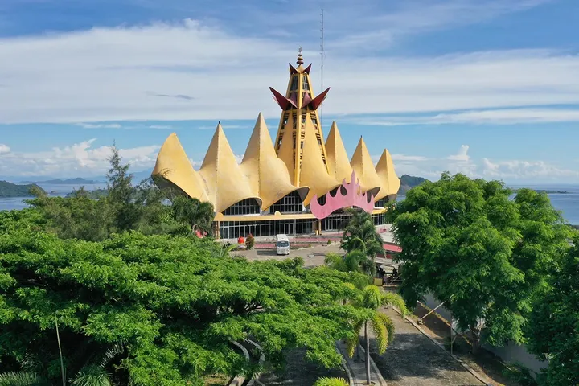

SIGER GO
SIGER GO
SIGER GO
SIGER GO

Menara Siger merupakan salah satu ikon wisata dan budaya paling terkenal di Provinsi Lampung yang terletak di kawasan Bakauheni, Lampung Selatan. Bangunan megah ini berdiri di atas perbukitan yang menghadap langsung ke Selat Sunda sehingga menawarkan pemandangan alam yang sangat indah dan memukau. Bentuk bangunan Menara Siger terinspirasi dari mahkota adat wanita Lampung yang dikenal dengan nama Siger, yang melambangkan kehormatan, kebesaran, dan identitas masyarakat Lampung.
Sebagai gerbang utama Pulau Sumatera, Menara Siger tidak hanya menjadi tempat wisata yang menarik, tetapi juga berfungsi sebagai simbol persatuan, kebudayaan, dan kebanggaan masyarakat Lampung. Setiap tahun, ribuan wisatawan dari berbagai daerah datang untuk menikmati panorama laut, mengabadikan momen di berbagai spot foto yang menarik, serta mempelajari sejarah dan budaya Lampung yang kaya akan nilai tradisi.
Melalui platform Siger Go, pengalaman wisata di Menara Siger menjadi lebih modern dan interaktif. Wisatawan dapat melakukan pembelian tiket secara digital, memperoleh informasi wisata dengan mudah, menikmati fitur Smart Audio Guide, serta mengakses informasi budaya Lampung melalui teknologi digital. Inovasi ini diharapkan dapat meningkatkan kualitas pelayanan wisata sekaligus memperkenalkan kekayaan budaya Lampung kepada masyarakat Indonesia maupun wisatawan mancanegara.
Scan QR Tiket untuk masuk ke kawasan wisata Menara Siger.
QR Tiket Menara Siger
Dengarkan sejarah Menara Siger dan budaya Lampung melalui panduan audio digital.
Scan QR ini untuk melihat informasi Mahkota Siger

Scan QR ini untuk melihat informasi Kain Tapis Lampung

Scan QR ini untuk melihat informasi Rumah Adat Lampung

Scan QR ini untuk melihat informasi Menara Siger
Scan QR Code objek budaya untuk melihat informasi budaya Lampung.



Total Pengunjung
Tiket Terjual
Review Positif
Simbol kebesaran dan kehormatan masyarakat Lampung.
Kain tradisional khas Lampung dengan sulaman benang emas.
Rumah tradisional yang menjadi identitas budaya Lampung.
Ikon Provinsi Lampung yang berada di Bakauheni.
📍 Bakauheni, Lampung Selatan
📞 0882-7659-2794
✉ Riangaming491@sigergo.com